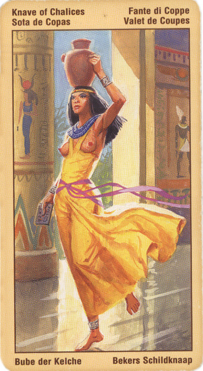

Принцесса Кубков (Валет)
Это – актер по призванию, а часто и по профессии. Он всегда чувствует себя «на сцене». Поэт, жаждущий признания публики, очаровательный мошенник, вообще человек с богатым воображением. Ему придется перенести многие испытания, прежде чем он научится правильно оценивать самого себя.
Значение: В прямом положении означает возможность улаживания какого-либо конфликта, примирение.
Если вам выпала эта карта, то не исключено, что вы находитесь на пороге нового жизненного этапа, который позволит вам реализовать свою мечту. Эта карта может означать начало какого-то проекта, также не исключено, что вскоре вы услышите хорошую новость. Эта карта также может возвещать о приходе в этот мир новой души - о рождении ребенка.
Принцесса Кубков олицетворяет некий импульс, толчок, шанс. В данном случае это может быть приглашение к участию в приятном деле или жест любви и примирения. Так или иначе, это инициатива, исходящая от других, которая апеллирует к нашим чувствам, и мы принимаем ее с радостью и благодарностью.
Принцесса. На редкость удачная карта в колоде Чаш! Хороший исход дела, новое знакомство.
В перевернутом значении эта карта может означать, что в эмоциональном плане вы сбиты с толку и поставлены в тупик или же что вы поддались романтическим страстям, которые затмили ваш разум и интуицию.
Перевернутая принцесса кубков указывает на человека рассеянного, неспособного к сосредоточению, к усидчивости, к упорному и монотонному труду. Или напротив, этот человек излишне сконцентрирован на чем-то одном и фанатеет на этом. Перевернутая принцесса кубков может указывать на человека со странностями, с какими-то отклонениями. Его социальное положение подчас может быть неопределенно. В крайнем случае, эта карта может символизировать обычного пошляка, весьма далекого от духовности.
Льстец и обманщик, эгоист; на все руки мастер; обольщение или обман.
Отрицательное значение карты: Обман, жульничество, рассеянность, любовь к показной роскоши. Фанатизм.